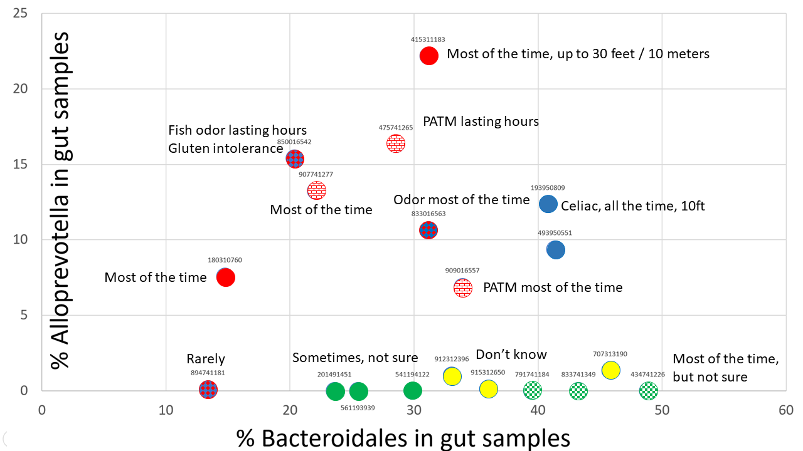

"All happy families are alike; each unhappy family is unhappy in its own way", said the great novelist. The Anna Karenina principle (AKP), in the context of metabolic disorders, would mean that an uncompensated deficiency in any one of important enzymes, or presence of any one of pathogenic microorganisms, dooms the person to having the MEBO/PATM symptoms.
We note that neither of microorganisms identified in our study is a true pathogen. These could be opportunistic microbes taking advantage of opportunities not normally available, such as weakened enzymes or disrupted gut microbiota. The microbes we see could be also symbionts of pathogens or indicators of inflammation and dysbiosis.
In our previous post we talked about Epulopiscium, a protist of uncertain taxonomic affinities and a parasite in the fish gut (Lane, 2011), that may accompany other intestinal parasites (Fu et al, 2019).

We also found Blastocystis hominis, protozoan parasite that can live in the human gastrointestinal tract, as a potential culprit in MEBO conditions. This microorganism was identified in gut microbiomes of individuals with most severe symptoms. It was
considered to be a harmless yeast for many years until shown to be a protozoan and a potential marker of intestinal dysbiosis.
In this post we'll talk about the third group of MEBO sufferers, the Alloprevotella group (See Fig).
Even though Alloprevotella was identified in only 10% of our samples (so far, as we are still waiting on batch #4), it seems to be responsible for making symptoms worse. The levels of this genus are decreasing as the frequency of self-reported malodor changes from "most" and "all the time" to "rarely". Analysis of samples donated by MEBO community members not participating in the study also shows prevalence of a little over 10% in MEBO population, whereas this genus was not detected in any of the samples donated by healthy individuals not from MEBO group.
The color code of the figure is as follows:
Red - individuals reporting PATM syndrome - all of them have noticed body odors, especially scalp, but sometimes also underarm and foot. All of them also reported bad breath. PATM was observed even if no odor was present.
Blue - celiac disease or gluten intolerance with both body and breath odor.
Green - tested negative for TMAU1 and TMAU2 (solid green = negative in all tests, checkered green - positive in an older test,
but negative in newer tests). These individuals had very low levels of Alloprevotella detected in one out of the 3 samples they submitted for testing. The former individual reported odor "some of the time" in all cases but was not sure about the life time of the odor nor its strength. The latter reported that had odor under control, but experimented for the study so had odor most or all of the time. Interestingly, this person reported that odor was noticeable at 10 feet for the sample that had low levels of Alloprevotella, while 8 feet for samples with no Alloprevotella detected.
Bad breath was reported in addition to body odor in all the cases.
Yellow - can't smell themselves and don't have a trust buddy but think that have odor all the time.
Alloprevotella is an oral bacteria associated with gingivitis and periodontal conditions. It could be responsible for bad breath reported by the participants in this group. It could be also responsible for body odors. Another interesting observation is that we see this bacterium in mouth and skin samples donated by MEBO volunteers, but neither of them had detectable levels in the gut. It's logical to suggest that our Alloprevotella group has even more Alloprevotella on their skin, in addition to other sites. Alloprevotella was also found in bacterial vaginosis with "fish odor" due to production of volatile amines.
All individuals in the Alloprevotella group reported some digestive issues, especially diarrhea (all of the time or sometime) and fatigue (most of the time or sometime). These symptoms were also decreasing as Alloprevotella and Bacteroidales were decreased.
Aloprevotella genus is enriched in those with chronic kidney conditions (Wang et al, 2019), in stressed piglets (Li et al., 2018) and in mice whose mothers were fed high fat diet. Its levels were increased in rats on high salt diet
(Wang at al 2018).
Exposure to the high dose of
Organophosphorus Pesticide DEP (diethyl phosphate) also enriches Alloprevotella
(along with another the butyrate-producing genera, Intestinimonas), leading to
an increase in estradiol and a resulting decrease in total triglycerides and low-density lipoprotein cholesterol
(Yang et al, 2019).
Alloprevotella is associated with cardiovascular disease and confers a decreased lifetime risk (Ascher and Reinhardt, 2017).
Some researchers even hypothesized that having at least 2 or 3% of Alloprevotella protects from heart disease.
Our microbiome trial is the first study where we can actually group participants based on the root cause, independently of their diets (unlike our
Biolab and
Wishart metabolome studies). We are looking forward to other discoveries as more data is becoming available.
REFERENCES
Gabashvili IS. Community-led research discovers links between elusive symptoms and clinical tests. bioRxiv. 2017 Jan 1:139014. DOI:
10.1101/19005223
Gabashvili I.S. Identifying subtypes of a stigmatized medical condition. medRxiv. 2019 Jan 1:19005223.DOI:
10.1101/139014
Fu PP, Xiong F, Feng WW, Zou H, Wu SG,
Li M, Wang GT, Li WX. Effect of intestinal tapeworms on the gut
microbiota of the common carp, Cyprinus carpio. Parasites & vectors.
2019 Dec;12(1):252.
Wolff B, Boutin S, Lorenz HM, Ueffing
H, Dalpke A, Wolff D. FRI0698 Prevotella and alloprevotella species
characterize the oral microbiome of early rheumatoid arthritis.
Lane N. The evolution of oxidative stress. Principles of Free Radical Biomedicine. 2011;1:1-7.
Coyne
MJ, Béchon N, Matano LM, McEneany VL, Chatzidaki-Livanis M, Comstock
LE. A family of anti-Bacteroidales peptide toxins wide-spread in the
human gut microbiota. Nature communications. 2019 Aug 1;10(1):3460.
Ascher S, Reinhardt C. The gut
microbiota: an emerging risk factor for cardiovascular and
cerebrovascular disease. European journal of immunology. 2018
Apr;48(4):564-75.
Kim
M, Wuertz S. Survival and persistence of host-associated Bacteroidales
cells and DNA in comparison with Escherichia coli and Enterococcus in
freshwater sediments as quantified by PMA-qPCR and qPCR. Water research.
2015 Dec 15;87:182-92.
Wang
J, Tang L, Zhou H, Zhou J, Glenn TC, Shen CL, Wang JS. Long-term
treatment with green tea polyphenols modifies the gut microbiome of
female sprague-dawley rats. The Journal of nutritional biochemistry.
2018 Jun 1;56:55-64.
Van
Gylswyk NO, Hippe H, Rainey FA. Pseudobutyrivibrio ruminis gen. nov.,
sp. nov., a butyrate-producing bacterium from the rumen that closely
resembles Butyrivibrio fibrisolvens in phenotype. International Journal
of Systematic and Evolutionary Microbiology. 1996 Apr 1;46(2):559-63.
Yang F, Li J, Pang G, Ren F, Fang B. Effects of Diethyl Phosphate, a Non-Specific Metabolite of Organophosphorus Pesticides,
on Serum Lipid, Hormones, Inflammation, and Gut Microbiota. Molecules.
2019 Jan;24(10):2003.
Li F, Wang M, Wang J, Li R, Zhang Y.
Alterations to the Gut Microbiota and Their Correlation With
Inflammatory Factors in Chronic Kidney Disease. Frontiers in Cellular
and Infection Microbiology. 2019;9:206.
Li Y, Guo Y, Wen Z, Jiang X, Ma X, Han
X. Weaning Stress Perturbs Gut Microbiome and Its Metabolic Profile in
Piglets. Scientific reports. 2018 Dec 24;8(1):18068.
Zhou L, Xiao X, Zhang Q, Zheng J, Li
M, Wang X, Deng M, Zhai X, Liu J. Gut microbiota might be a crucial
factor in deciphering the metabolic benefits of perinatal genistein
consumption in dams and adult female offspring. Food & function.
2019;10(8):4505-21.
Lourenςo TG, Spencer SJ, Alm EJ,
Colombo AP. Defining the gut microbiota in individuals with periodontal
diseases: an exploratory study. Journal of oral microbiology. 2018 Jan
1;10(1):1487741.
Wang
H, Li S, Fang S, Yang X, Feng J. Betaine improves intestinal functions
by enhancing digestive enzymes, ameliorating intestinal morphology, and
enriching intestinal microbiota in high-salt stressed rats. Nutrients.
2018 Jul;10(7):907.
Ascher
S, Reinhardt C. The gut microbiota: an emerging risk factor for
cardiovascular and cerebrovascular disease. European journal of
immunology. 2018 Apr;48(4):564-75.
Pino A, Giunta G, Randazzo CL, Caruso S, Caggia C, Cianci A. Bacterial
biota of women with bacterial vaginosis treated with lactoferrin: an
open prospective randomized trial. Microbial ecology in health and
disease. 2017 Jan 1;28(1):1357417.
{kind=link}